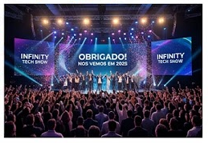
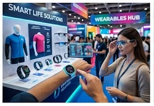
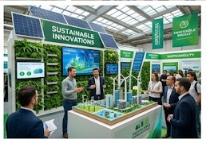
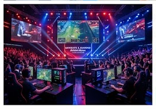
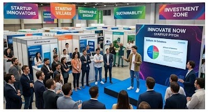
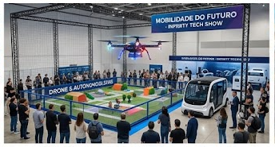
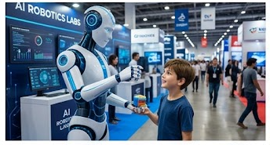
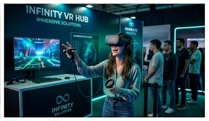
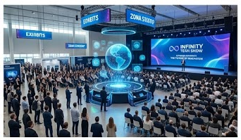
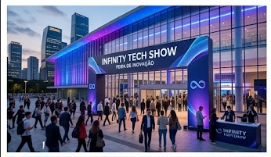

A Infinity Tech Show nasceu em 2021 com o propósito de aproximar pessoas, empresas e instituições do universo da tecnologia e da inovação. Idealizada por um grupo de profissionais apaixonados por ciência e desenvolvimento tecnológico, a feira surgiu como um evento regional voltado para a troca de conhecimentos e a apresentação de novas tendências do mercado. Com o passar dos anos, a Infinity Tech Show cresceu rapidamente, atraindo visitantes de diversas partes do país. O evento passou a reunir grandes empresas do setor, startups inovadoras, palestrantes renomados, pesquisadores e estudantes interessados em conhecer as tecnologias que estão transformando o mundo. Além das palestras e exposições, a feira incorporou cursos, workshops práticos, competições de programação, robótica e empreendedorismo, tornando-se um importante espaço para aprendizado, networking e oportunidades profissionais. A cada edição, a Infinity Tech Show busca apresentar soluções inovadoras nas áreas de inteligência artificial, computação em nuvem, segurança digital, internet das coisas, realidade virtual e sustentabilidade tecnológica. Hoje, a Infinity Tech Show é reconhecida como uma das principais feiras de tecnologia do país, promovendo a conexão entre conhecimento, criatividade e inovação. Seu compromisso é inspirar pessoas e organizações a construírem um futuro cada vez mais tecnológico, inclusivo e sustentável.
| Horário | Atividade | Palestrante | Local |
|---|---|---|---|
| 09:00 | Abertura Oficial da Infinity Tech Show | Comissão Organizadora | Auditório Principal |
| 10:00 | O Futuro da Inteligência Artificial | Ana Souza | Auditório Principal |
| 11:30 | IA Aplicada aos Negócios | Carlos Lima | Sala Tech 1 |
| 12:30 | Horário de Almoço | ------------- | Praça de Alimentação |
| 14:00 | Machine Learning na Prática | Fernanda Silva | Laboratório 1 |
| 16:00 | Painel: Ética na Inteligência Artificial | Convidados Especiais | Auditório Principal |
| Horário | Atividade | Palestrante | Local |
|---|---|---|---|
| 09:00 | Desenvolvimento Web Moderno | Bruno Martins | Sala Tech 1 |
| 10:30 | Criação de Aplicativos Mobile | Juliana Alves | Laboratório 2 |
| 11:30 | Horário de almoço | ------------- | Praça de Alimmentação |
| 13:30 | Cibersegurança para Empresas | Marina Costa | Auditório Principal |
| 15:00 | Proteção de Dados e LGPD | Pedro Rocha | Sala Tech 2 |
| 17:00 | Desafio de Programação | Equipe Infinity | Arena Gamer |
| Horário | Atividade | Palestrante | Local |
|---|---|---|---|
| 09:00 | Robótica Industrial | Rafael Santos | Laboratório 1 |
| 10:30 | Internet das Coisas (IoT) | Fernanda Silva | Sala Tech 1 |
| 11:30 | Horário de almoço | ------------- | Praça de alimentação |
| 13:30 | Casas Inteligentes e Automação | Ana Souza | Auditório Principal |
| 15:00 | Oficina de Robótica Educacional | Juliana Alves | Laboratório Maker |
| 17:00 | Competição de Robôs | Equipe Infinity | Arena Tecnológica |
| Horário | Atividade | Palestrante | Local |
|---|---|---|---|
| 09:00 | Empreendedorismo Tecnológico | Pedro Rocha | Auditório Principal |
| 10:30 | Como Criar uma Startup de Sucesso | Marina Costa | Sala Tech 2 |
| 11:30 | Horário de almoço | ------------- | Praça de alimentação |
| 13:30 | Indústria dos Games e eSports | Bruno Martins | Arena Gamer |
| 15:00 | Computação Quântica e o Futuro | Carlos Lima | Auditório Principal |
| 17:00 | Encerramento e Premiação Geral | Comissão Organizadora | Auditório Principal |
| Empresa | Cidade | Segmento | Estande |
|---|---|---|---|
| TechSoft | São Paulo | Software | 12 |
| CloudNet | Curitiba | Cloud Computing | 4 |
| RoboTech | Florianópolis | Robótica | 7 |
| Future AI | Brasília | IA | 10 |
| Total de Expositores: 4 | |||
A Infinity Tech Show ultrapassou a marca de 15 mil inscritos em apenas duas semanas.
"A expectativa é receber visitantes de todos os estados do Brasil."Portal Tecnologia Hoje contato@infinitytechshow.com
Grandes empresas de tecnologia confirmaram presença na Infinity Tech Show, aumentando a variedade de expositores do evento.
"A participação de empresas líderes fortalece o papel da feira como referência em inovação."Revista Inovação Digital empresas@infinitytechshow.com
A competição de robótica contará com equipes de diversas instituições de ensino e promete ser uma das atrações mais disputadas da feira.
"Esperamos mais de 50 equipes competindo durante os quatro dias do evento."Jornal Tecnologia em Foco robotica@infinitytechshow.com










A participação é permitida para todas as idades. Menores de 16 anos devem estar acompanhados por um responsável.
Sim, você pode participar de todas as palestras que desejar, conforme a disponibilidade de vagas.
A inscrição pode ser realizada através da página de cadastro do evento.
Sim, os participantes inscritos receberão certificado digital após o evento.
Sim, haverá estacionamento disponível para visitantes e expositores.
Sim, recomendamos levar notebook para participar de oficinas e atividades práticas.
Sim, o evento contará com diversas opções de alimentação durante os quatro dias.
Você pode entrar em contato pelo e-mail contato@infinitytechshow.com ou pelos canais oficiais do evento.